十二页设计稿 · diagrams.net原生矢量绘制 · 合成示例，非TD运行截图
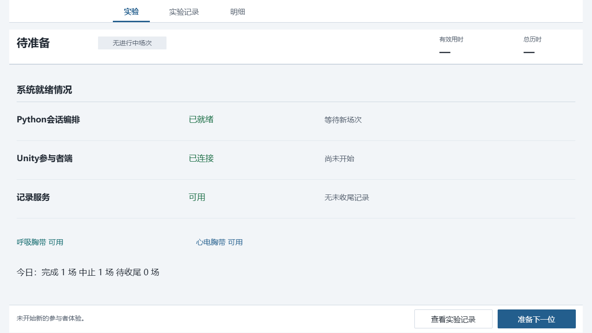
以真实就绪摘要与未收尾任务为中心，弱化重复标题。
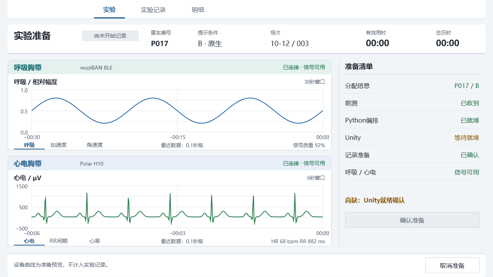
准备清单集中显示，缺项与禁用按钮直接对应；曲线仅为准备预览。
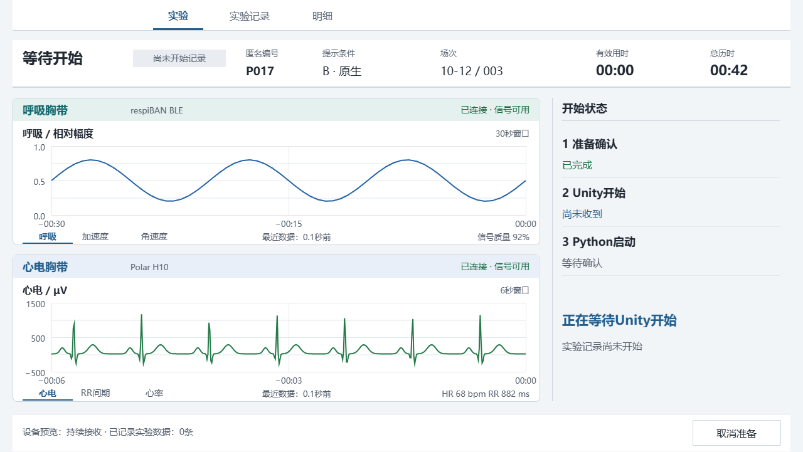
准备完成、Unity开始、Python启动是不同事实，不提前宣称记录开始。
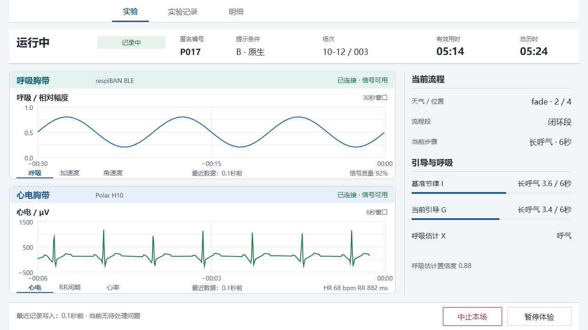
上方确定阶段、对象与计时，左侧观察信号，右侧核查流程和引导，下方执行操作。
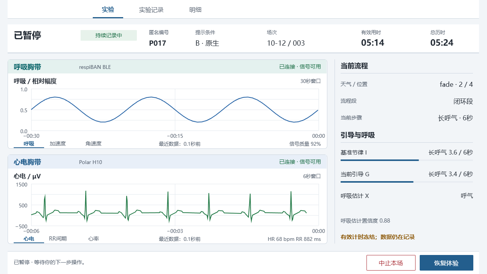
有效用时与总历时相邻，暂停不暗示数据采集停止。
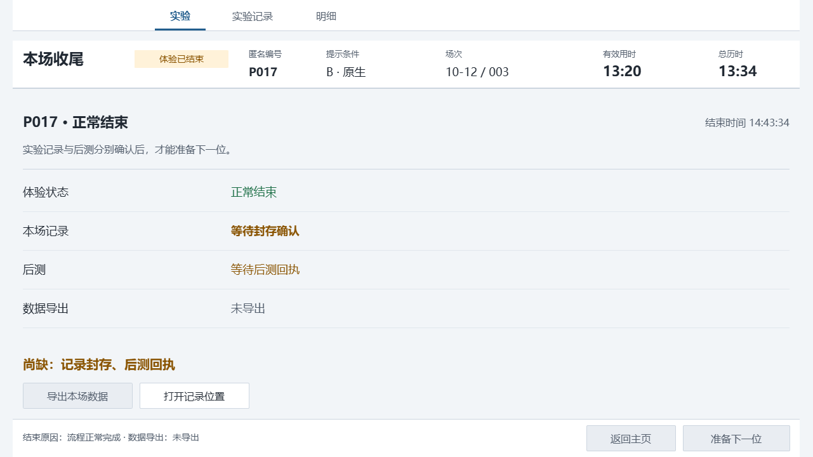
体验结束不等于收尾完成，封存与后测分别确认。
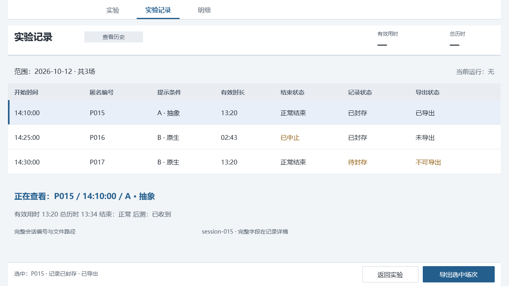
所选行、摘要和导出对象一致，不沿用当前运行场次的编号与计时。
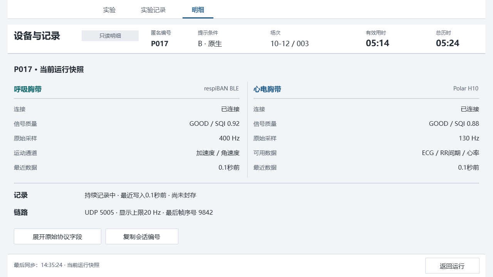
设备事实先于协议与纳秒时钟，原始字段仍可展开。
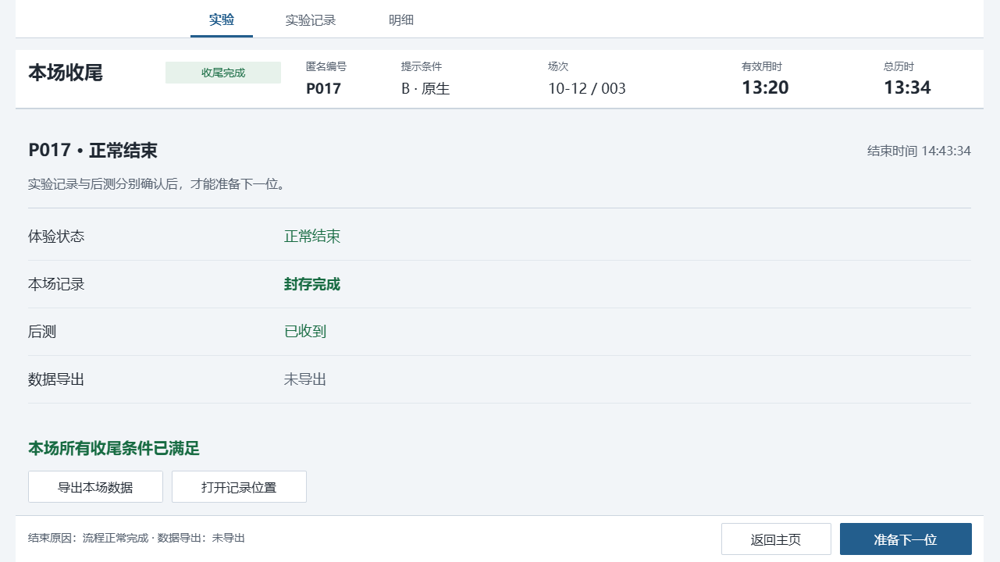
满足封存与后测条件后，启用下一位入口；导出状态独立显示。
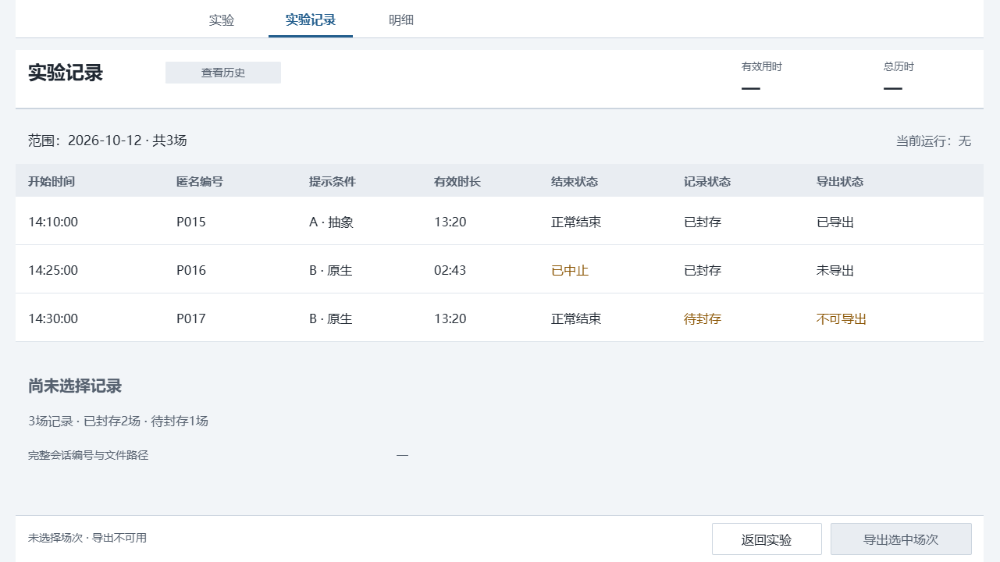
无选中对象时不回退到当前场次。
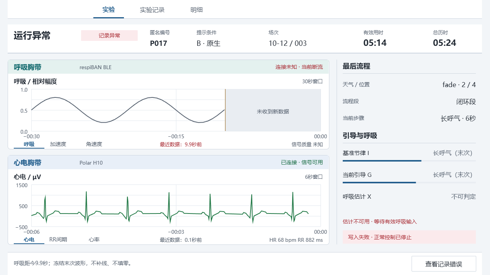
示例缺失区间为30秒窗口的33%，即9.9秒；信号质量未知，X不可判定。
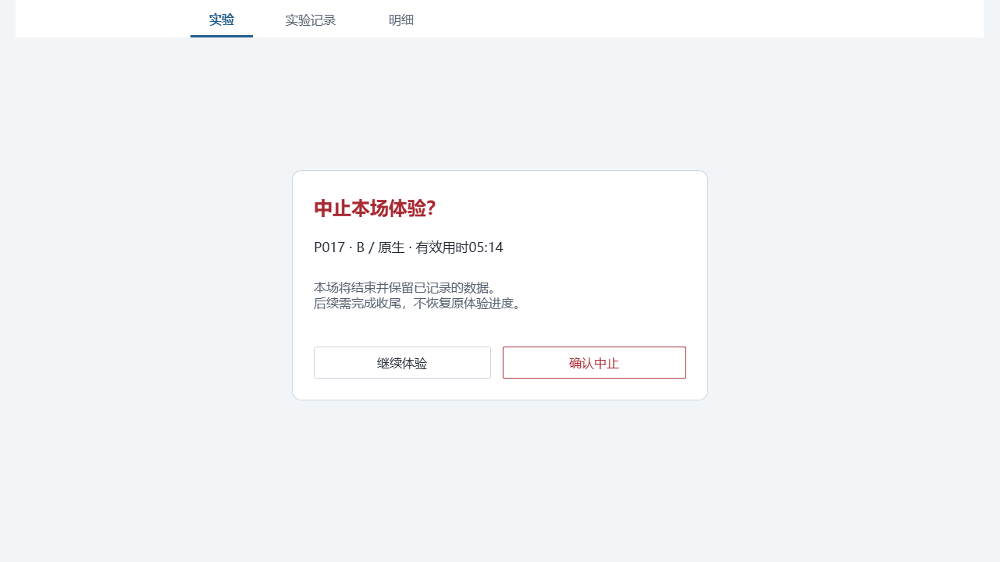
仅为结束本场这一有后果的动作确认，不给普通切换增加确认。